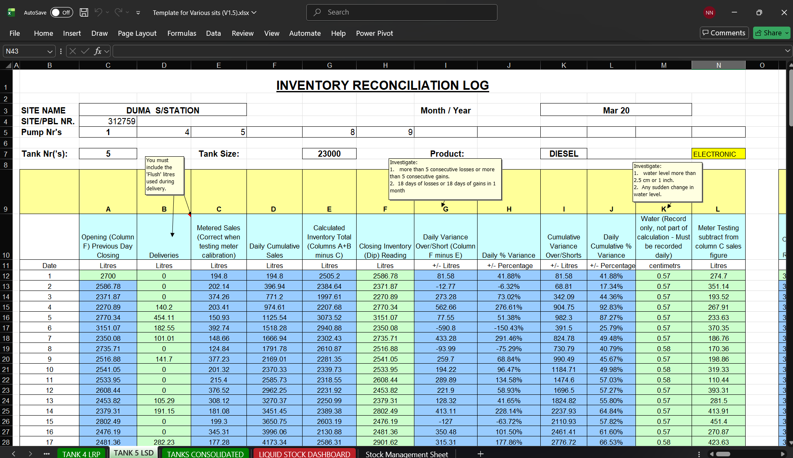
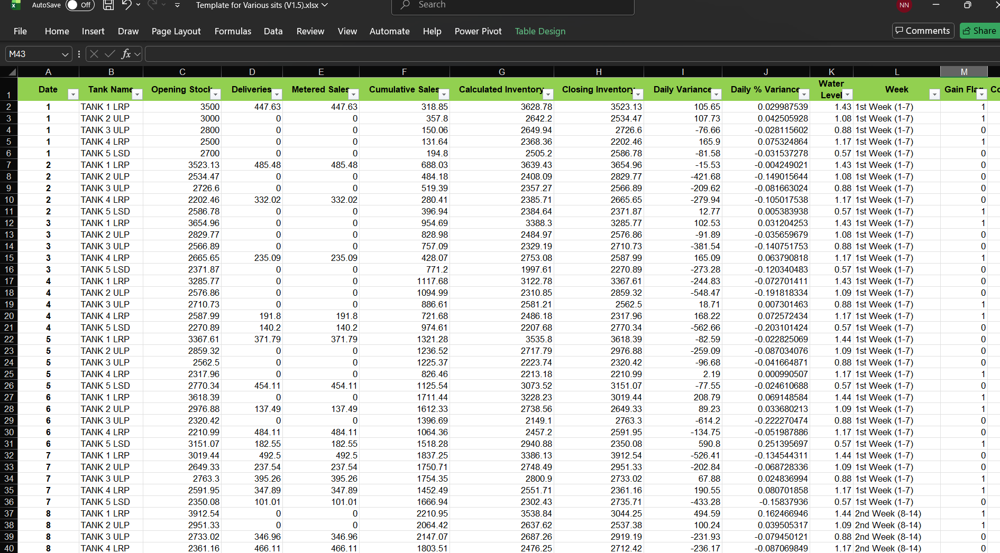

PUMA Energy
Automated Fuel Stock System ⛽
An end-to-end Excel-driven data system designed to prevent fuel stock losses, improve visibility, and support better operational decisions.
Note: All visuals on this page use generic, anonymised data. Original client data has been replaced to protect confidentiality.
What problem was the business facing?
Several PUMA Energy stations relied on disconnected Excel documents. Data was captured across multiple sheets and files, with no consolidated view of stock movement or performance.
When issues arose, answers were buried in paperwork and spreadsheets, often discovered only after losses had already occurred. Management was left asking: “What is actually happening on the ground?”
This project focused on a PUMA Energy station located at 330 Voortrekker Road, Goodwood, Cape Town. I was brought onto the project by Sibulele Sijaji to help stabilise stock control and introduce meaningful analysis.
How was data being captured?
The system mirrored the real operational workflow. Each pump attendant captured readings during their shift, which were consolidated at day-end with minimal manual effort.
The intent was not to overcomplicate operations, but to introduce structure that improved accuracy without adding pressure on staff.
How did the solution work?
I built a dynamic, multi-layered Excel model that consolidated data in clearly defined stages:
- Pump-level entries linked to specific tanks
- Pump data consolidated into tank-level tables
- Tank data rolled up into a master stock table
- A configuration table controlling tanks, pumps, and hoses
Adding new tanks, pumps, or hoses required no structural rebuild. The model adjusted automatically, allowing the same template to scale across stations with different layouts.
What did the dashboards and tables show?
Click an image to view it in full resolution.


The dashboards provided visibility into:
- Daily and monthly stock levels
- Expected vs actual volumes after stock take
- Usage trends across tanks
- Early indicators of losses
Interactive dashboard walkthrough
Demonstration uses simulated data.
Where is the project heading?
This Excel-based system was never intended as the final solution. It served as an interim step to stop losses while longer-term development was planned.
The future vision extends toward a fully automated, real-time platform capable of:
- Detecting abnormal stock patterns automatically
- Alerting management before losses escalate
- Predicting fuel depletion timelines
- Supporting smarter purchasing decisions
- Analysing fuel price trends in South Africa
The Excel model remains a strong foundation while revenue and development capacity continue to grow.